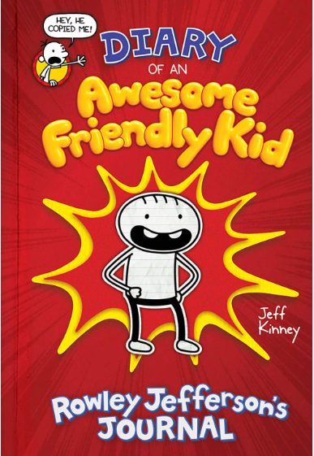

Diary of a Wimpy Kid is an American children's book series and media franchise created by American author and cartoonist Jeff Kinney.[1][2] The series follows Greg Heffley, a middle-schooler who illustrates his daily life in a diary (although he insists that it is a journal).[3]
Kinney spent eight years working on the first book before showing it to a publisher.[4] In 2004, Funbrain and Kinney released an online version of Diary of a Wimpy Kid. The website made daily entries from September 2004 to June 2005.[5] The online version had received almost 20 million views by 2009. Nonetheless, many online readers requested a printed version. In February 2006, during the New York Comic Con, Kinney signed a multi-book deal with publisher Abrams Books to turn Diary of a Wimpy Kid into a printed book series.[4] The first installment was released in April 2007[5] and received immediate success. In April 2009, Time magazine named Kinney in the Time 100 most influential people.[6]
As of June 2024, the series consists of eighteen main entries, as well as an activity book. A spin-off series centering on the character Rowley Jefferson has three installments as of 2021.[7] 20th Century Studios produced a live-action film series of the same name from 2010 to 2017, and three animated films in the early 2020s.[8]
Since the release of the online version, most of the books have garnered positive reviews and commercial success. As of 2020, more than 250 million copies have been sold globally, making it the fourth best-selling book series of all time.[9]
books and release dates
No.
title
release date
1
diary of a wimpy kid
april 1 2007
2
rodrick rules
february 1 2008
3
last straw
october 12 2009
4
dog days
january 13 2009
5
ugly truth
november 9 2010
6
cabin fever
november 15 2011
7
the third wheel
november 13 2012
8
hard luck
november 15 2014
9
double down
november 1 2016
10
the getaway
november 7 2017
11
the meltdown
octobet 13 2018
12
wrecking ball
november 15 2019
13
the deep end
october 27 2020
14
big shot
october 26 2021
15
Diper Överlöde
october 25 2022
16
no brainer
october 24 2023
about the author
Jeffrey Patrick Kinney (born February 19, 1971)[1] is an American author and cartoonist. He is best known for creating, writing and illustrating the children's book series Diary of a Wimpy Kid. He also created the child-oriented website Poptropica.
Early life
Jeff Kinney was born and raised in Fort Washington, Maryland. Kinney attended Potomac Landing Elementary School and later Bishop McNamara High School, where he graduated in 1989. He has an older brother and sister, and a younger brother.[2] He is of Irish descent.[3] He attended the University of Maryland, College Park, in the early 1990s. It was in college that Kinney created a popular comic strip, Igdoof, which ran in the school student newspaper, The Diamondback.[4] Kinney graduated from the University of Maryland in 1993, originally majoring in computer science but switching to criminal justice in order to have more time to work on his comic.[5] In 2021 he was inducted into Omicron Delta Kappa as an alumnus of the University of Maryland.
Diary of a Wimpy Kid book series
diary of an awesome friendly Kid

Diary of an Awesome Friendly Kid: Rowley Jefferson's Journal is a spin-off of the Diary of a Wimpy Kid series by Jeff Kinney.[4] Unlike the main-series books, which are written from the perspective of Greg Heffley, Diary of an Awesome Friendly Kid is written from the perspective of Greg's best friend, Rowley Jefferson, acting as Greg's biographer.[5] The book was released on April 9, 2019.[4][2] A sequel, titled Rowley Jefferson's Awesome Friendly Adventure was released on August 4, 2020,[6] delayed from an initial release date of April 7, 2020.[7][8] A third book in the spin-off series, titled Rowley Jefferson's Awesome Friendly Spooky Stories, was released on March 16, 2021.
plot:
Rowley starts his diary by explaining that he started writing in one because his best friend, Greg Heffley, owns one as well. In the second entry, Rowley shows his diary to Greg, who accuses Rowley of copying him. Greg then comes up with the idea that Rowley's journal should be Greg's biography. Rowley complies, and changes the title of his diary from Diary of an Awesome Friendly Kid to Diary of Greg Heffley by Greg Heffley's Best Friend Rowley Jefferson.
Rowley starts the biography with a chapter titled "Early Life," and skips ahead to when he first met Greg in fourth grade. He writes that he likes Greg for "doing hilarious things," then changes topics to his first sleepover with Greg, where he pees his pants after getting scared by a noise outside. Other entries focus on when Rowley saves Greg from attending a birthday party after falling in a hornet’s nest, Greg's "accomplishments" (a blank list for Rowley to fill in later when Greg accomplishes something), Rowley tripping over a rock and Greg telling him he disturbed an "ancient burial ground," Rowley believing that his deceased grandfather has come back as a ghost to haunt his cabin, Greg playing a "wacky prank" by pretending to be a burglar, and Rowley mishearing Greg's request to "pull him back up on his feet" after he loses his balance, instead grabbing Greg by the feet and causing him to fall in a puddle, angering Greg.
In Rowley's entry about "the time when Greg created a special award just for me," Greg gives Rowley a "good boy award" for cleaning Greg's garage. Greg gives Rowley more awards for doing his chores, and after Rowley says that they aren't special anymore because he has so many, Greg makes a "point system" instead, with Rowley's reward for getting 50 points being a basket of dirty laundry.
Rowley then writes about "the time I found out Greg is a lousy study partner." While studying for a math test with Rowley at the library, Greg tries to make a secret code and cheat on the test. Opposed to the idea of cheating, Rowley suggests that they study separately, and Greg slips a mean note between the dividers. This leads to Greg and Rowley making entire pages of rude drawings with "that's you" notes, and they get kicked out of the library after Rowley chases Greg.
In the next entry, "the time I made the worst mistake of my life," Greg cheats by copying Rowley's entire test, even writing Rowley's name. They both get in trouble, and while Greg is given three days of detention and forced to take the test again, Rowley is given a warning. He gets upset after he is warned not to cheat. Rowley writes about "the time Greg totally had my back" next, hoping that Greg won't get mad for making him look bad. The class gets a new teacher, who is not bothered by the students acting crazy and not doing any work. Everyone, including Rowley, gets a "C" grade. Greg complains that Rowley was the only one who did classwork, causing the teacher to increase Rowley's grade to a "B." When it was raining, Greg loses his temper when he was playing Twisted Wizard and breaks the controller. Rowley then brings up an anecdote in which he and Greg draw their own superheroes. In the penultimate diary entry, Rowley has a sleepover at Greg's house, where they sneak out to bounce on a trampoline. Greg's parents get mad and his mother divides his and Rowley's room in half. Greg draws an "invisible forcefield" that "zaps" Rowley if he tries to pass through it. Greg prevents Rowley from using the bathroom, and he pees out the window in the morning. The sleepover ends with Greg flushing one of Rowley's action figures down the toilet.
Rowley shows Greg his biography, and Greg is angry that it focuses on both him and Rowley instead of just him. Rowley suggests that it could be their biography, but Greg threatens to change all the parts with Rowley. Rowley changes the diary's focus back to himself. The book ends with Rowley's parents telling him he should find new friends, and Rowley responding that he can't because Greg takes up a lot of his time. Rowley believes that since Greg's mother says that friends get on each other's nerves, he and Greg must be "best friends" since they get on each other's nerves the most.
Development
A shorter Wimpy Kid story from Rowley's point of view was written to celebrate World Book Day 2019. Kinney later developed it into a full-length book, becoming Rowley Jefferson's Journal, because he enjoyed writing it.[9]
In an interview on the official Wimpy Kid YouTube channel, Kinney described that he noticed "the audience [...] always rooting for Rowley" in the Diary of a Wimpy Kid movies.[10] This inspired him to write a novel from Rowley's point of view.[11] On the subject of the book's illustrations, Kinney said that he liked how his art style is still recognizable even though Rowley "draws like a five year-old."[11] He stated that he enjoyed writing the book and that it is his favorite book in the series,[12] because he likes how Rowley is unable to keep the book's focus on Greg.[11] When asked if the series would change to focus entirely on Rowley, Kinney confirmed that he will continue to write main-series books, but that he would also "really like to write more Rowley books," because "it's a lot of fun, and I think it's really fresh, and [Rowley] can write in lots of different styles about lots of different genres. So I'd really like to get to there, where Rowley is authoring lots of books."[11] The following year, a follow-up to Rowley Jefferson's Journal, titled Rowley Jefferson's Awesome Friendly Adventure, was published. Rowley Jefferson's Awesome Friendly Spooky Stories, another sequel, was released in March 2021.